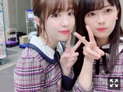

2019/0405Fri純真可憐
こんばんは。

名古屋での全国握手会、ペアは蓮加でした。
お越しいただいた皆様ありがとうございました！

蓮加とのペアは嬉しかったな〜
こんな事普段絶対言わないんだけどね。笑

蓮加が撮ってくれたよ〜
素敵なお花、ありがとうございました！
そして大阪での全国握手会は、まいちゅんと。
以前もペアになった事がありまして
2期生同士、凄く安心して出来ました〜

お花は時間の都合上撮る事が出来ませんでした
お花を下さったファンの皆様
本当に申し訳ないです、、
でもしっかり目に焼き付けておきました！
本当にありがとうございました。
かりんとゆっちゃんの卒業発表。
私は少し前から知ってはいましたが、
正直なところ物凄く寂しい。
かりんはね、風船は生きているの
ラスサビ前のみんなが私を囲んで
指を指すところがあるんだけど
私がそこの部分好きなのを知っているから
バースデーライブでも本当はそこの部分
移動でカットされちゃうはずだったんだけど
かりんがそこはやろうって言ってくれていた
みたいで(>_<)
そういうメンバー一人一人に対する気遣いが
物凄く行き渡ってて、
でもかりんにも焦って切羽詰まって
泣いている場面も見た事あるから、
かりんに全て頼っててはいけないなあと
思っていたり。
ゆっちゃんは初期の頃から
二人でご飯に何回か行ったりする仲で
( 知らなかったでしょう？ )
幼かったのに可愛がってくれて
面白くて優しい方です。
ゆっちゃんがいると周りの子が
自然と笑っている事が多く
それはゆっちゃんの才能なのかなあと
見ていて羨ましくなりました。
そんな二人が卒業を発表して
悲しいけどそれが二人の選択した道だから
二人がいつも笑顔の様に
私も二人を笑顔で送れたらいいなあと
思っています(^ ^)

みり愛
2019/04/05 19:18


コメント(387)
りくまより
久々だね楽しみに待ってたからかな？w
体調気をつけて！大好きだー！
いちこめぇ
全国握手会ありがとう！
久々に会えて嬉しかった！
アルバム個握もよろしくね！
かりんちゃんとゆったんの卒業は寂しいね。。。
卒業までの期間たくさん思い出作ってね！
名古屋の全握すごい楽しかったよ。
2人とも元気ありすぎてこっちまですごい元気になっちゃった。
かりんと優里の卒業すごい寂しいけど思いっきり背中押してあげてね！
これからも応援してるよ。
また握手会で会えるの楽しみにしてる
応援してるど！！
全国握手会お疲れ様！
かりんちゃんとゆったんの卒業は悲しいよね。
俺もこれからも2人のこと応援し続けるよ！！
それと早く握手したいなぁ
幕張個握行くから待ってて⁽⁽٩(๑˃̶͈̀ ᗨ ˂̶͈́)۶⁾⁾
個握楽しみにしてるね
ゴルゴンゾーラ神
最近さ、部活あんま上手くいかないのさ。努力してても、あんま報われてないし。まだ努力足りないんよね！俺は報われるまで努力して頑張るね！だから応援してて欲しい。みりあ、めっちゃ好きだし！握手いくから。みりあの活躍にも期待してるだから頑張って！！
関東以外の握手会にはなかなか行けないから、なんだか寂しいわー
5月の個握には行くから、またよろしくね
かりんとゆったんはビックリしたよ
でもそれぞれが決断したことだから、これからも応援しないとね
22枚目シングル帰り道は遠回りしたくなる握手会お疲れ様でした！
今回の22枚目は1/14.2/3.個握と3/10.3/31全握行かせて頂きました〜
アルバム個握は就活で行けないんですけど就活の報告は23枚目個握でするのでいい報告ができるように頑張ります
これからも永遠の推しです、ずっと応援してます！！
れんかと仲良いもんね
かりんちゃん、ゆったん卒業悲しい
かりんちゃんのそういうメンバー思いのところ素敵だねゆったんとご飯行ったりしてたんだ
知りませんでした
ゆったんの明るいところ自分も好きです
写真だけでもあげてくれるとありがたいです！！
やっぱり可愛いな～(^^)
早く就活終わらせて会いにいきたいな～(..)
かりんちゃんとゆったん卒業は辛いな……
東京体育館のアンダラは一生忘れない思い出です。
12人しかいなかったのにもっといなくなっちゃうよ……
みり愛ちゃん二人の分も楽しんで活動してね！！
みり愛ちゃん見て自分も就活頑張ります！！
ブログとかモバメ待ってます！！
みり愛頑張って＼(^^)／
新年度なにかと忙しいかと思うけど、体調に気をつけ頑張って！！！
更なる飛躍を期待しております！！
この前の大阪全握ではとても楽しい時間が過ごせました！
本当は大阪行かないはずだったんだけどどうしても5月まで待てなくて行ったら幕張のこと覚えててくれててすごい嬉しかったです！
自分もまさかみり愛が覚えてるよ！と言ってくれると思ってなくて声が出てしまった笑
ほんとにありがとうね！次は幕張個握になるのてまた会えるの楽しみに学校もバイトもがんばる！！
かりんちゃんとゆっちゃんの卒業は僕もすごい寂しくて、ゆっちゃんの卒業発表前にみり愛がゆっちゃんとペアじゃなかったら僕は少し後悔してたかもしれません。偶然ではあるかもしれないけどあの時ゆっちゃんと最初で最後の握手に導いてくれたのはみり愛のおかげでもあるので感謝してます。
文が長くなってしまって申し訳ない！
みり愛ちゃんいつも本当に元気をくれてありがとう！
だいすき！
卒業は笑顔でね！
笑っていれば、またどこかで繋がれるからね！
体調に気を付けてね
んじゃねー
かりんちゃんとの風船のエピソード。
私もあの部分好きだからバスラ行けなかったけどやってくれて嬉しいいい(;_;)
ホントにかりんちゃん優しい、、
もう乃木坂として頼れるのも最後になっちゃうけどいつかかりんちゃんに勇姿をお届けできたらいいね( ´,,•ω•,,`)♡
ゆうりとも仲良いのあんまり知らなかったからちょっと意外だったけど仲良いのも何となくわかるかも（笑）
二人とも乃木坂にとって大事な存在だし寂しくなるけどまだまだ頑張ってね︎☺︎
無理しない程度に！︎☺︎
それにしても明るい髪色似合うね可愛いなぁ〜( ´,,•ω•,,`)♡
本当にありがとうございます。
握手会での神対応本当に生きる活力となっております。
メンバーの卒業、やはり寂しいものですよね。ぜひ華やかに送り出してあげてください。
卒業するのは寂しいけど笑って送り出さなきゃね。
卒業したメンバーの穴を埋めるのは大変だけどみり愛ちゃんの頑張りをずっと応援してます！
でも、これからのみり愛の頑張りをみてこれからの乃木坂をみり愛にと思わせるように頑張って！
みり愛1人じゃなくて、ファンである俺も応援するから！！
毎日お疲れ様です。
早くみり愛ちゃんに会いたいな〜
忘れられてるかもしれないし(笑)
卒業生がまた出ちゃうけど、私たちも沢山の思い出があります。
卒業する日まで仲良くしてください。
いつもありがとう。
みりあ可愛い！
４th握手会行くよー！
楽しみ!
名古屋全握も大阪全握も行かせていただきましたー！
大阪の日は誕生日でして。
みり愛ちゃんに会えてとても楽しい一日になりました、ありがとうございました。
蓮加との仲良しペア、まいちゅんとの二期生ペア、どちらもよかったでーす！
最年長と最年少と。ペアの年齢差笑笑
握手会でも言ったけど、みり愛ちゃんがユニット曲もらったのがすごく嬉しくて嬉しくて。アルバム発売が待ちきれない…
それと、ZIP春フェス行きました〜
会場がちっさかったからめっちゃ見えたよ〜！
シンクロニシティでフロント踊ってるのすごいかっこよくて、ダンスめっちゃきれいだった！！
枡アナの後ろでジコチュー踊ってるの楽しそうだったねー笑
与田ちゃんと背比べして勝ってドヤ顔してたみり愛ちゃんが1番印象に残りました。笑笑
次は5月アルバム個握お邪魔しまーす。
名古屋行きます！よろしくね〜
れお
純真可憐です。
(ToT)
名古屋、大阪と全握お疲れ様でした〜！
今度は遠征します！！！笑
またまた仲間の卒業が発表されたね。
かりんちゃんはよく気遣いが出来る子。それはファンもみんな分かるくらい伝わっていたよ。
2期生にだけじゃなくて先輩の1期生にも後輩の3期生にも全てに気配りができてとっても素敵なお姉ちゃん。お姉ちゃんというかままかな。
みんなのお母さんがいなくなってしまうね。
なんとなく卒業してもずっといそうだけどね笑
ゆっ担らの卒業もびっくりした。
でもそうだよね。もう卒業してもおかしくなかったよね。
ご飯とか行ってたの意外だけどそこまで驚かいかな笑
そんなムードメーカーのゆったんがいなくなってしまうのは寂しいね。
勝手にだけど、みり愛はこの2人がとっても好きだからブログを書くのに時間が掛かったのかな。っと思っています。
悲しいと思うし、寂しいと思う。
でも、仲間が抜けた分そこを埋める為にも頑張らないとね！
応援してるから一緒に頑張ろう〜！
ではこの辺で〜
東京の桜はもう満開やね！！
桜は咲き始めから散る瞬間まで綺麗だから好きなんだ〜
へばなっ
握手おつかれさま！楽しめたかな？
大阪の、アルバム個握行くので待っててください！(笑)
まいちゅんとの全握レーンめちゃくちゃ行きたかったのですが、行けなかったのでまたある時に行きたいです！
大阪全握楽しかったです
次は4月末のアルバム個握ですよろしくお願いします〜。
まいちゅんとのツーショット最高ですやん。笑笑
4月の大阪のアルバム個握行くから！！
アルバム個握の前の週はNissyのLIVE行くんだー！
その感想も個握で言うね！
(^o^)
乃木坂は良いグループだなぁ
握手会お疲れ様でした
れんたんとのらぶらぶ風景もっと見たいなあ(｡>﹏<｡)♡♡♡
そしてかりんちゃんとゆったんとの残り時間大切にしてね
今後も皆仲良くしてね
これからも頑張って(/･ω･)/
メンバーの卒業は寂しいけど、新たな一歩応援しましょうね！
体調崩さないように気をつけてください。応援してます！
大阪の全握行ったよー！
まいちゅんと握手させて頂くのは初めてだったけど、みり愛ちゃんもまいちゅんも笑顔で楽しくお話しして下さってとっても楽しい時間でした！ ありがとう！
みり愛ちゃんはいつも元気に接してくれて毎回、本当に楽しいよー！
かりんちゃんと ゆったん の卒業、僕も寂しいです。。
でも、前向きなご卒業だと思うのでこれからも応援させて頂くつもりです！
バスラの風船の時にそんなことがあったんだね。 かりんちゃんの、メンバーの方々を本当に思っていらっしゃる気持ちがとても伝わってきます！
いつもモバメもありがとう！
忙しいと思うけど体調に気を付けて〜 応援してます！
今度の名古屋の個握行くからね〜◎
認知されたいなあ...とか思ってます ♀️
全握は日程合わずで会いに行けなかった...
でも今月末やっと会いにいけるからそれを糧に1日1日を頑張っていくよ！
気心知れた仲間が去っていくのは寂しいと思うけど、新たな道を選んだ2人を、みり愛ちゃんが言う通り笑顔で送り出せるといいね。
またの更新楽しみにしてるよ。
hide
コメントする